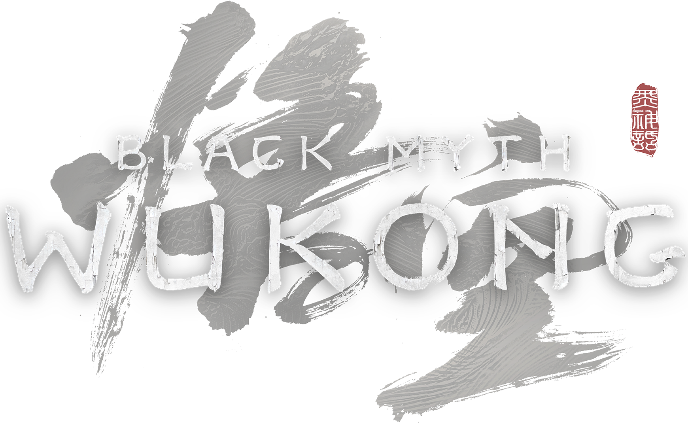
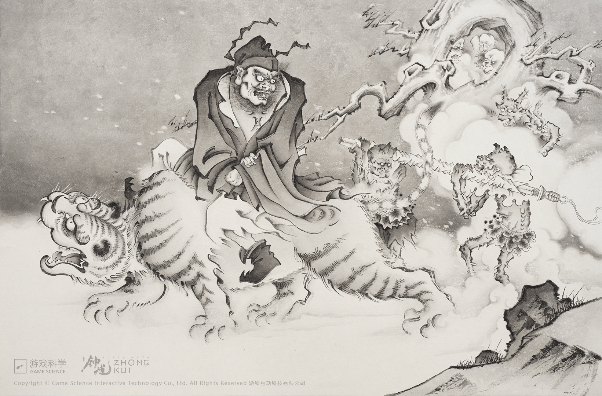

Black Myth Wukong is a game that released in 2024 and is based on the story, "Journey to the West." The player controls the "Destined One," a monkey attempting to reclaim six scattered relics containing Sun Wukong's lost senses. In a world with monsters, gods, and magic, the game explores Chinese culture and mythology without much regard for historical accuracy. However, there are many allusions and small details that give insight to Chinese history.
The tale "Journey to the West" originates from the 16th century, during the reign of the Ming Dynasty in China. Although initially published anonymously, it is believed to have been written by Wu Cheng'en, a novelist and poet. It is in a way a political satire and is considered to be one of the most popular literary works of East Asia; it is a tale of enlightenment, redemption, and human nature. The story is interpreted to be a critique of the bureaucracy and corruption of the Ming Dynasty, giving it importance in a historical and cultural aspect.
Needless to say, the game is not entirely accurate to the original story, and is, of course, not necessarily a reflection of Chinese history. There are, however, plenty of references to the true story in this retelling that give it value in a cultural sense. In addition, the architecture, clothing, and just overall style of the game are similar to that of China in the Ming Dynasty. In these rights, there is a plethora of elements of the game that are remnants of the history we study in HIST 80, and this website will focus primarily on these details present in the game rather than analyzing "Journey to the West".